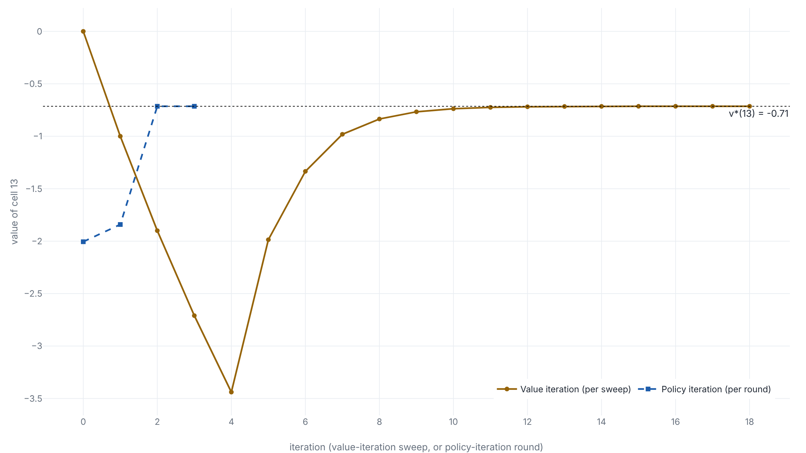

Two improvements find the best policy
On lesson 1's slippery grid, two rounds of evaluate-and-improve lift cell 13 from −2.01 to −0.71, while the top half, already optimal, does not move.
Why this matters
Lesson 1 drew a policy on a slippery 4×4 grid by hand, worked out that standing on cell 13 is worth −2.01, and then said the obvious out loud: nobody had checked whether that hand-drawn rule was any good. A policy is the rule that chooses a move in each cell. The question this lesson answers is how to find the policy that earns the most from every cell, and how to find it without trying rules at random.
The answer is old and still in use. AlphaGo Zero, the program that learned Go from self-play alone, is described by its authors as an approximate policy iteration scheme. A tree search sharpens the network's current rule of play. Self-play games scored by that search measure how good the sharper rule is, and the network is trained to match both. By the end of this lesson you will have run the small, exact version of that loop on the grid. You will watch it reach the best policy in two improvements, and watch a second method reach the same policy by folding one improvement into every pass.
- 01
-
The value of a state is an average you can solve for: lesson 1 sets up the grid, the fixed policy, the value v_\pi, and the direct solve this lesson reuses. Its
gridworld.pyis the environment imported below. - 02
- Sutton and Barto, Reinforcement Learning: An Introduction: chapter 4 (printed pp. 73-84) is policy iteration and value iteration in the field's standard notation, with a second worked example.
What the hand-drawn arrows are worth
The grid is lesson 1's, unchanged, so the numbers compare directly. Sixteen cells, numbered 0 to 15 row by row from the top. Arriving at cell 3, the goal, pays +10; arriving at cell 6, the pit, pays −20; any other move pays −1; both the goal and the pit end the run. Moves slip: with probability 0.8 a move goes where it is aimed, and with probability 0.1 to each side, so a cell's own choice does not fully decide where it lands. The discount rate is \gamma = 0.9, the weight on the next step's value.
Lesson 1 fixed one policy by hand, pointing most cells up and right toward the goal, and solved for its value function v_\pi, the expected discounted return from each cell under that policy.1 It did so with a direct solve. The policy's one-step move probabilities among the non-terminal cells form a matrix Q, and the expected one-step reward forms a vector b. Every cell's value then falls out of v = (I - \gamma Q)^{-1} b. The values it found, kept to two places, run from +6.48 next to the goal down to −2.01 at cell 13 in the bottom row.
A value function says how good each cell is to stand on. It does not say whether the move the policy makes there is the best move available. To ask that, you need the worth of each move, which the value of a cell does not give, and the hand-drawn arrows have never been measured against the alternatives. That measurement is where the search for a better policy starts.1
Cell 14 would rather go right
The worth of a move is the action value. The action value q_\pi(s, a) is the expected return from taking action a in cell s once, and following the policy \pi everywhere after.1 Written in terms of the values already in hand, it is the average over where the move lands, of the reward on arrival plus the discounted value of the arrival cell.1
Take cell 14, in the bottom row, one cell from the lower-right corner. The hand-drawn policy sends it up. Price each of its four moves against the values in hand, in the order up, right, down, left. Up reaches cell 10 with probability 0.8 and pays its way to −1.08. Right reaches cell 15 with probability 0.8, and cell 15 is worth +1.98, so the move is worth +0.32. Down walks into the bottom wall and stays, worth −1.78. Left heads back toward the pit's neighbourhood, worth −2.55. The four numbers are −1.08, +0.32, −1.78, −2.55. The largest is right, and it beats the hand-drawn up by 1.40.
A policy that, in each cell, takes the move with the highest action value is the greedy policy with respect to v_\pi.1 The greedy step reads a value function and returns a policy: at cell 14 it returns right.
The step changes less than it might seem. Cell 13, next to cell 14, has action values −2.01, −2.05, −2.71, −2.61 in the same order, and the hand-drawn up is already the best of them. A greedy step leaves cell 13 exactly as it was. Cell 13 can only improve once cell 14, its right-hand neighbour, is worth more to move toward, and cell 14's new worth is not known until the whole policy is re-evaluated. One cell flips, most do not, and the cells that do not flip are waiting on the ones that do.
One greedy step is never a step down
Flipping cell 14 to right helps cell 14. The claim that makes the whole method work is larger: switching to the greedy policy helps everywhere at once, or at worst changes nothing, and never costs a cell. This is the policy improvement theorem. If a policy \pi' satisfies q_\pi(s, \pi'(s)) \ge v_\pi(s) at every cell, then v_{\pi'}(s) \ge v_\pi(s) at every cell, with strict improvement at any cell where the first inequality is strict.1 The greedy policy meets the hypothesis by construction, since choosing the best action is at least as good as keeping the policy's own.
The proof is one inequality applied over and over. Start at a cell, write its value as no larger than the greedy action's value, expand that one step, and the same inequality applies again to the cell reached next.
Howard, who first wrote down this loop in 1960, proved the same fact with the linear algebra lesson 1 already set up. For the improved policy, the gain in value is (I - \gamma Q')^{-1} times the vector of per-cell gains in the greedy test, and that inverse has non-negative entries, so an improvement at one cell cannot pull any value down.2 Van Roy's notes carry the operator form of the same chain.3
A greedy step against the exact q_\pi is not a trade that costs one cell to help another; it is a change that holds every cell at its old value or lifts it. The first step past the hand-drawn policy lifts the eight cells of the bottom two rows and leaves the top two rows exactly where they were.1
Evaluate, improve, repeat until the arrows stop
Two steps interlock. Evaluation reads a policy and returns its value function, the direct solve from lesson 1. Improvement reads a value function and returns the greedy policy. Policy iteration runs them in turn from any starting policy, and stops when a round of improvement changes no arrow, because an unchanged policy is greedy with respect to its own values and so cannot be bettered.1
Ties need a stated rule. At the optimum of this grid, cells 9 and 12 each have two moves of exactly equal value, so a plain argmax may keep flipping between them and inflate the count of rounds. The run follows Howard's 1960 rule: keep a cell's current move when its value ties the best, and compare moves by action value, since plain argmax can break a tie differently from one run to the next.2 With that rule, starting from the hand-drawn policy, improvement changes cell 14 in the first round and cell 13 in the second, and the third round changes nothing. Two improvements, then one round that confirms there is nothing left to change.
The gains are concentrated. The optimal values match the hand-drawn policy's across the top eight cells, and separate only in the bottom two rows, the cells near the pit that had room to steer wider of it.
| Cell | v_\pi | v_* | Gain |
|---|---|---|---|
| 8 | −0.72 | −0.71 | +0.00 |
| 9 | −1.03 | −1.01 | +0.01 |
| 10 | −0.10 | +0.06 | +0.16 |
| 11 | +4.02 | +4.04 | +0.02 |
| 12 | −1.86 | −1.73 | +0.13 |
| 13 | −2.01 | −0.71 | +1.29 |
| 14 | −1.08 | +0.61 | +1.69 |
| 15 | +1.98 | +2.16 | +0.18 |
Policy iteration stops for a reason that does not depend on the grid. There are finitely many ways to assign one move to each cell, each round strictly improves the policy until it cannot, and a thing that strictly improves through a finite list has to halt.1 Van Roy states this as a theorem for any finite-state, finite-action problem with \gamma in [0, 1].3
A max in place of the average
Policy iteration solves a full linear system each round. There is a way to reach the same answer without ever solving one, and it starts from the equation the optimal values obey. The value function of a fixed policy satisfies a backup that averages the next value under that policy. The optimal value function satisfies the same backup with one change: the average over the policy's move becomes a maximum over all four moves.
- v_*(s)the value of the cell under the best policy
- \max_atake the best move, where lesson 1 averaged under \pi
- P(s' \mid s, a)the chance that move a lands in s'
- R(s')the reward for arriving there, discounted by \gamma one step on
- v_*(s')the best-policy value of the arrival cell, 0 at the goal and the pit
Value iteration
Read that equation as an instruction and it becomes an update. Start with every value at 0. In each sweep, replace each non-terminal cell by the maximum over its four moves of the arrival reward plus the discounted old value, and leave the goal and the pit at 0.1 This is value iteration. In code it is one line: price the four moves from the current values, take the row maximum, and repeat.
Watch cell 13. For the first four sweeps its value falls, to −1.00, −1.90, −2.71, −3.44, each sweep adding one more step's cost of −1 at a smaller weight. It falls because the good news has not arrived. The shortest route from cell 13 to the goal is five moves, so the +10 cannot reach cell 13 until the fifth sweep, where the value turns and climbs. By sweep 18 the largest change anywhere in a sweep has dropped below 1e-4, and every value sits within 8e-5 of the optimum. Pushing to a tolerance of 1e-8 takes 30 sweeps. The greedy policy read off the result is the same \pi_* policy iteration found.

control.py below.1
Value iteration converges for the same reason lesson 1's sweeps did. The backup is a contraction in the max-norm: apply it to any two value functions and the largest gap between them shrinks by a factor of at least \gamma.4 The one new step is that the maximum does not spoil this. Taking the best move of each of two value functions moves their gap by no more than the largest per-move gap, so \max is a non-expansion, and the optimality backup contracts just as the policy backup did.5
The two methods are the same idea in different proportions. Policy iteration evaluates a policy in full, then improves it, and repeats a few times. Value iteration folds a single improvement into every sweep and never evaluates any policy to the end. On this grid one reaches the best policy in two improvements and the other in eighteen sweeps, and both print the same arrows and, cell by cell, the same values. What neither can do is run when the rewards and the slip are unknown, the usual case outside a solved grid. Learning the best policy from sampled experience alone is the next lesson.1
The code
One file holds all of it. It imports the environment from lesson 1's gridworld.py unchanged, and adds evaluation, the greedy step, policy iteration and value iteration. With both files in one folder, uv run control.py installs numpy from the inline metadata and finishes in about a second.
# /// script
# requires-python = ">=3.10"
# dependencies = ["numpy"]
# ///
"""Find the best policy on lesson 1's grid: policy iteration and value iteration."""
import numpy as np
from gridworld import N, PI, R, TERMINAL, ARROWS, fixed_policy, transitions
GAMMA, SLIP = 0.9, 0.2
LIVE = [s for s in range(N) if s not in TERMINAL]
def evaluate(policy):
"""v_pi by the direct solve from lesson 1: v = (I - gamma Q)^{-1} b."""
Q, b = fixed_policy(policy, SLIP)
return np.linalg.solve(np.eye(N) - GAMMA * Q, b)
def action_values(v, P):
"""q(s, a) = sum_s' P[s, a, s'] (R[s'] + gamma v[s']) for every s, a."""
return P @ (R + GAMMA * v)
def greedy(v, P, old, tol=1e-9):
"""Greedy policy against v, keeping the old action on a tie (Howard, 1960)."""
q = action_values(v, P)
new = old.copy()
for s in LIVE:
if q[s, old[s]] < q[s].max() - tol:
new[s] = int(q[s].argmax())
return new
def policy_iteration(start):
P = transitions(SLIP)
policy, values = start.copy(), [evaluate(start)]
rounds = 0
while True:
nxt = greedy(values[-1], P, policy)
values.append(evaluate(nxt))
rounds += 1
changed = np.flatnonzero(nxt != policy)
print(f" round {rounds}: {changed.size} changed"
+ (f" -> cell {changed[0]}" if changed.size else "")
+ f", v(13) = {values[-1][13]:.4f}")
if not changed.size:
return nxt, values
policy = nxt
def value_iteration(tol):
P = transitions(SLIP)
v, trace13 = np.zeros(N), [0.0]
while True:
nxt = v.copy()
nxt[LIVE] = action_values(v, P)[LIVE].max(axis=1)
trace13.append(nxt[13])
if np.abs(nxt - v).max() < tol:
return nxt, len(trace13) - 1, trace13
v = nxt
def show(title, *grids):
print(title)
for r in range(4):
print(" ".join(" ".join(f"{g[4 * r + c]:6.2f}" for c in range(4))
for g in grids))
def arrows(policy):
glyph = [("." if s in TERMINAL else ARROWS[policy[s]]) for s in range(N)]
for r in range(4):
print(" ".join(glyph[4 * r:4 * r + 4]))
def main():
P = transitions(SLIP)
v_pi = evaluate(PI)
show("v_pi of the hand-drawn policy:", v_pi)
q = action_values(v_pi, P)
print(f"v_pi(13) = {v_pi[13]:.4f} (lesson 1: -2.01)")
print("cell 14 q (up,right,down,left):", *q[14].round(4))
print("cell 13 q (up,right,down,left):", *q[13].round(4))
print("\nPolicy iteration (keep old action on tie):")
pi_star, vals = policy_iteration(PI)
v_star = vals[-1]
print("pi_* (arrows, '.' at goal and pit):")
arrows(pi_star)
show("v_* and the gain v_* - v_pi:", v_star, v_star - v_pi)
print(f"v_*(13)={v_star[13]:.4f} v_*(14)={v_star[14]:.4f}; "
f"gains 13:{(v_star-v_pi)[13]:.4f} 14:{(v_star-v_pi)[14]:.4f}; "
f"max gain rows 0-1: {abs((v_star-v_pi)[:8]).max():.4f}")
q_star = action_values(v_star, P)
print(f"ties at v_*: cell 9 {q_star[9,0]:.4f}={q_star[9,1]:.4f}, "
f"cell 12 {q_star[12,0]:.4f}={q_star[12,1]:.4f}")
print("\nValue iteration from v = 0:")
for tol in (1e-4, 1e-8):
v_vi, sweeps, _ = value_iteration(tol)
same = (greedy(v_vi, P, PI)[LIVE] == pi_star[LIVE]).all()
print(f" tol {tol:.0e}: {sweeps} sweeps, "
f"err {abs(v_vi - v_star).max():.1e}, greedy == pi_*: {bool(same)}")
_, _, trace = value_iteration(1e-4)
print("VI v(13) per sweep:", *[round(x, 4) for x in trace])
print("PI v(13) per round:", *[round(v[13], 4) for v in vals])
if __name__ == "__main__":
main()v_pi of the hand-drawn policy:
2.16 4.04 6.48 0.00
0.61 0.06 0.00 6.48
-0.72 -1.03 -0.10 4.02
-1.86 -2.01 -1.08 1.98
v_pi(13) = -2.0055 (lesson 1: -2.01)
cell 14 q (up,right,down,left): -1.076 0.3167 -1.7774 -2.5499
cell 13 q (up,right,down,left): -2.0055 -2.0478 -2.7085 -2.6148
Policy iteration (keep old action on tie):
round 1: 1 changed -> cell 14, v(13) = -1.8412
round 2: 1 changed -> cell 13, v(13) = -0.7142
round 3: 0 changed, v(13) = -0.7142
pi_* (arrows, '.' at goal and pit):
> > > .
^ ^ . ^
^ ^ > ^
^ > > ^
v_* and the gain v_* - v_pi:
2.16 4.04 6.48 0.00 0.00 0.00 0.00 0.00
0.61 0.06 0.00 6.48 0.00 0.00 0.00 0.00
-0.71 -1.01 0.06 4.04 0.00 0.01 0.16 0.02
-1.73 -0.71 0.61 2.16 0.13 1.29 1.69 0.18
v_*(13)=-0.7142 v_*(14)=0.6129; gains 13:1.2912 14:1.6889; max gain rows 0-1: 0.0000
ties at v_*: cell 9 -1.0142=-1.0142, cell 12 -1.7347=-1.7347
Value iteration from v = 0:
tol 1e-04: 18 sweeps, err 7.6e-05, greedy == pi_*: True
tol 1e-08: 30 sweeps, err 4.1e-09, greedy == pi_*: True
VI v(13) per sweep: 0.0 -1.0 -1.9 -2.71 -3.439 -1.9863 -1.3345 -0.9811 -0.8355 -0.7668 -0.7377 -0.7245 -0.7188 -0.7162 -0.7151 -0.7146 -0.7144 -0.7143 -0.7143
PI v(13) per round: -2.0055 -1.8412 -0.7142 -0.7142The takeaway
The hand-drawn policy was half right. Across the top eight cells it was already the best any policy could do, and its values did not move. Near the pit it was beatable, and two rounds of evaluate-and-improve beat it: cell 13 rose from −2.01 to −0.71, cell 14 from −1.08 to +0.61, with no cell anywhere left worse. That is the answer to the question lesson 1 left hanging. The policy was good where the route to the goal was forced and loose where the walker had room to steer wider of the pit.
Two methods reach the same policy. Policy iteration evaluates a policy in full and then improves it, and here it finished in two improvements. Value iteration folds one improvement into each sweep and never evaluates a policy to the end, and here it took eighteen sweeps to settle cell 13 within a ten-thousandth of −0.71. Both only work because the slip and the rewards are known and the grid is small enough to write every equation down. When those go missing, the best policy has to be learned from sampled experience, the subject of the next lesson.
- 01
- Silver and colleagues, Mastering the game of Go without human knowledge (2017): the Methods section, "Reinforcement learning", lays out the self-play loop as an approximate policy iteration scheme, with search as the improvement step.
- 02
- Howard, Dynamic Programming and Markov Processes (1960): chapter 7 (pp. 76-91) is the discounted routine this lesson runs, with the value-determination operation and the policy-improvement routine named for the first time.
- 03
- Bertsekas, Abstract Dynamic Programming, chapter 1: section 1.2.2 (pp. 8-12) proves, for the finite discounted problem, that both backups are contractions and that value and policy iteration both reach the fixed point.
Sources
- MIT Press · Richard S. Sutton and Andrew G. Barto, Reinforcement Learning: An Introduction, 2nd edition, 2018 (second printing 2020)
- Ronald A. Howard · Dynamic Programming and Markov Processes, MIT Press and John Wiley, 1960
- Benjamin Van Roy · MS&E 235A Lecture Notes 06, Policy Iteration, Stanford, 2025
- Benjamin Van Roy · MS&E 235A Lecture Notes 05, Value Iteration, Stanford, 2025
- Dimitri P. Bertsekas · Abstract Dynamic Programming, chapter 1